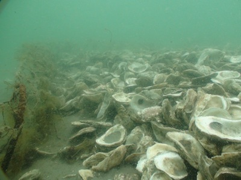
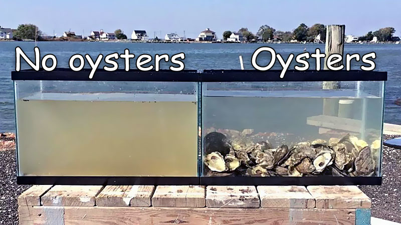
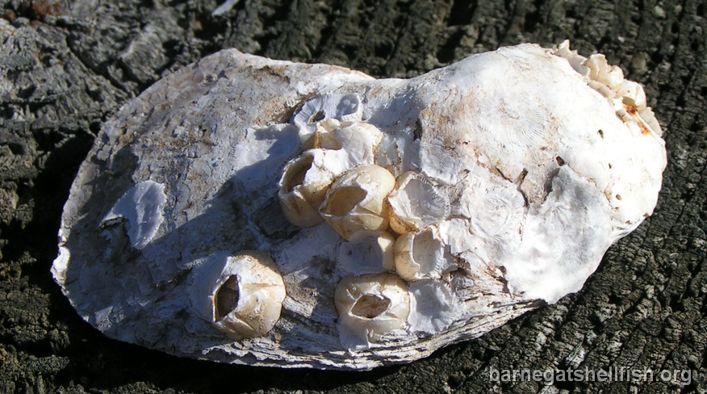
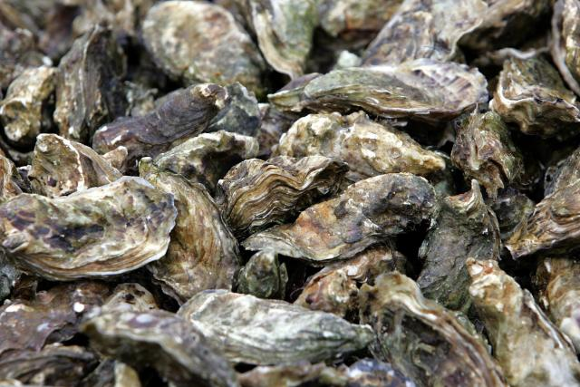

Sustainability
Oyster farms are one of the most sustainable foods to eat. They help sustain and build up the environment, while providing economically benefits. The oysters require no fertilizers or any special care; all they need is salt water and phytoplanktons, which already occur in rivers and streams.
Oysters play an important role in the aquaculture surrounding it, mostly because it filters the water. One oyster in a span of 24 hours can filter up to 60 gallons of water. With many oysters clumped up together, It filters a lot of water, which creates a healthy habitat for other creatures.
The amount of oysters also creates a hard surface for barnacles, mussels, and other oysters to grow on.
Oysters also absorbs the carbon from the ocean and air to make its shell. The absorption of carbon reduces the amount of greenhouse gases in our atmosphere. The carbon filled shells are also reused in nurseries and to sell.
These oysters also have an importance economically because oysters are fancy food staple, so it has a big turnover, and a sustainable business creates more jobs which supports the many people.